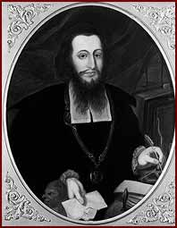

|  | ||
| Samson Wertheimer was a Court Jew (Hoffaktor) in Vienna. At home in the Jewish disciplines, he founded a Talmudic school and supported the formation of forty religious communities in Hungary. Some of these communities considered him the national chief rabbi. | ||